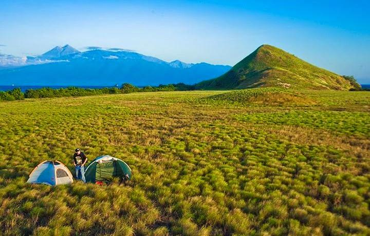
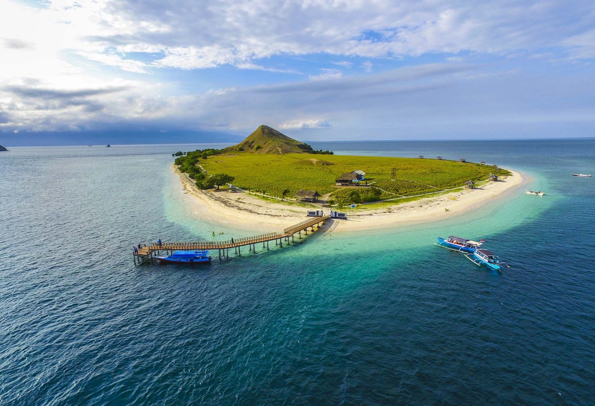

Post by dayat, Sunday 06 Juny 2018
WISATA SUMBAWA memiliki keindahan alam yang tak kalah memesona jika dibandingkan dengan Pulau Lombok. Di sekitar Pulau Sumbawa terdapat pulau-pulau kecil seperti gili yang ada di sekitar Pulau Lombok. Salah satu pulau kecil yang sangat terkenal beberapa tahun terakhir adalah Pulau Kenawa. Pulau Kenawa terletak di wilayah Poto Tano, Kabupaten Sumbawa Barat.
Pulau Kenawa terkenal dengan keindahan padang savana yang hijau di musim hujan dan cokelat eksotis di musim kemarau. Ciri khas pulau ini adalah adanya bukit yang tidak terlalu tinggi di tengan pulau. Dari atas bukit ini, kita bisa melihat keseluruhan pulau kenawa. Pesona birunya laut, pasir putih, dan padang savana yang membentang dapat kita abadikan dari bukit ini. Pulau Kenawa juga memiliki keindahan bawah laut yang cukup indah. Meski dibeberapa spot terumbu karang sudah mulai rusak, akan tetapi ada spot yang masih indah untuk menemani aktivitas snorkeling ataupun free diving.
Bagi family traveler, Kenawa Island cocok untuk dijadikan tempat berlibur bersama keluarga. Di pulau ini sudah dibangun beberapa gazebo yang bisa digunakan untuk duduk bercengkerama sambil menikmati keindahan pulau. Di Pulau ini juga terdapat fasilitas toilet yang sangat membantu bagi wisatawan. Kenawa Island juga merupakan lokasi yang sangat tepat untuk aktivitas camping. Pemandangan saat sunrise dan sunset merupakan objek foto yang sangat indah. Saat malam hari, kita bisa menikmati keindahan taburan bintang di langit Pulau Kenawa. Pulau kenawa juga sangat cocok untuk menghabiskan honeymoon bagi para couple traveler. Suasana yang tenang dan indah akan menjadi moment yang tak terlupa.
Dari kota Mataram sebagai ibukota provinsi NTB, kita bisa menggunakan mobil menuju pelabuhan Kayangan di Lombok Timur. Perjalanan yang akan kita tempuh membutuhkan waktu sekitar 2,5 jam. Dari pelabuha Kayangan, kita akan menyebrang menuju pelabuhan Poto Tano menggunakan Kapal Fery. Waktu penyebrangan sekitar sekitar 1,5-2 jam tergantung besarnya gelombang laut. Setelah sampai di Pelabuhan Poto Tano, kita bisa berjalan menempuh jarak sekitar 500 meter menuju tempat penyebrangan. Untuk menyebrang ke Kenawa Island, kita bisa menyewa perahu milik nelayan. Waktu penyebrangan sekitar 20 menit saja karena jaraknya tidak terlalu jauh, bahkan kita bisa melihat Pulau Kenawa dari pelabuhan Poto Tano.
Kenawa Island seperti umumnya wilayah sumbawa memiliki suhu yang cukup tinggi di siang hari, jadi sebaiknya kita menggunakan sunblock atau membawa payung agar bisa jalan-jalan mengitari pulau dengan nyaman. Di Kenawa belum ada penjual makanan, jadi jangan lupa membawa makanan. Kita bisa membeli makanan di dekat lokasi penyebrangan. PulauKenawa beberapa waktu ini dicemari banyak sekali sampah sehingga dilakukan kegiatan sosial bersih sampah oleh organisasi kepemudaan di Sumbawa, jadi para wisatawan dihimbau untuk membuang sampah pada tempatnya untuk menjaga keindahan Pulau Kenawa.
Sumber : https://sasambotour.com/informasi-wisata-pulau-sumbawa/
Pulau Moyo
Pulau Kelapa
Air Terjun Oi Marai
Gili Trawangan
Bukit Pergasingan